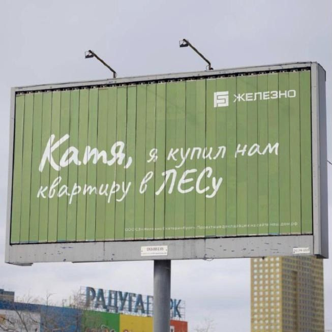
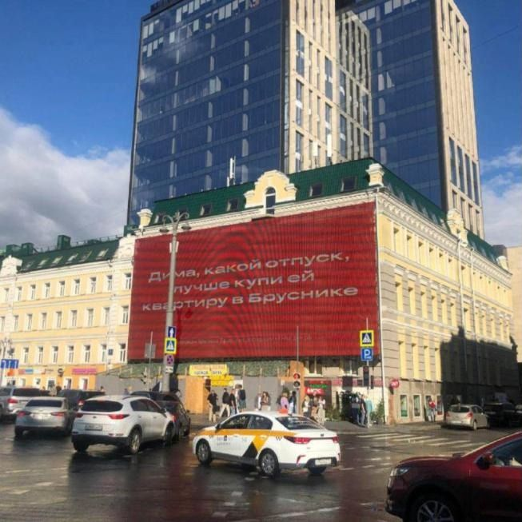
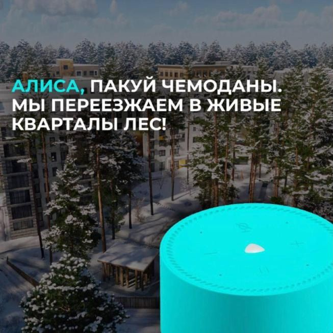
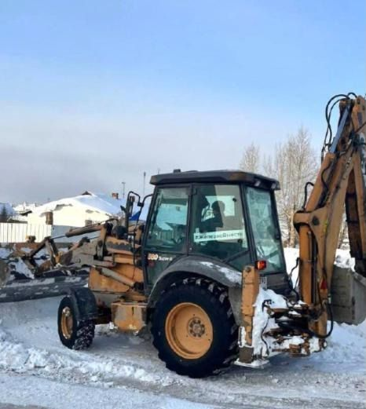
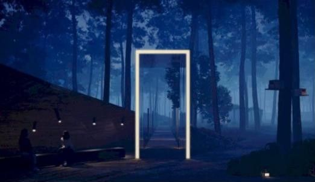
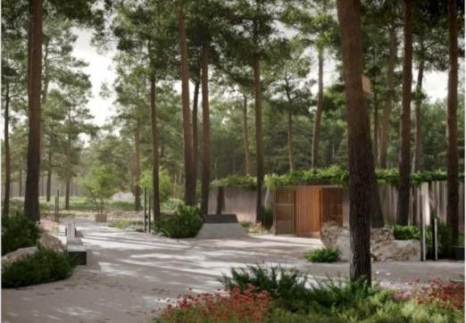
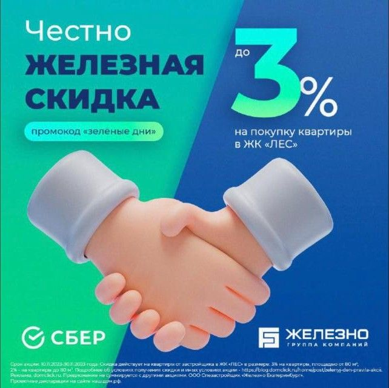
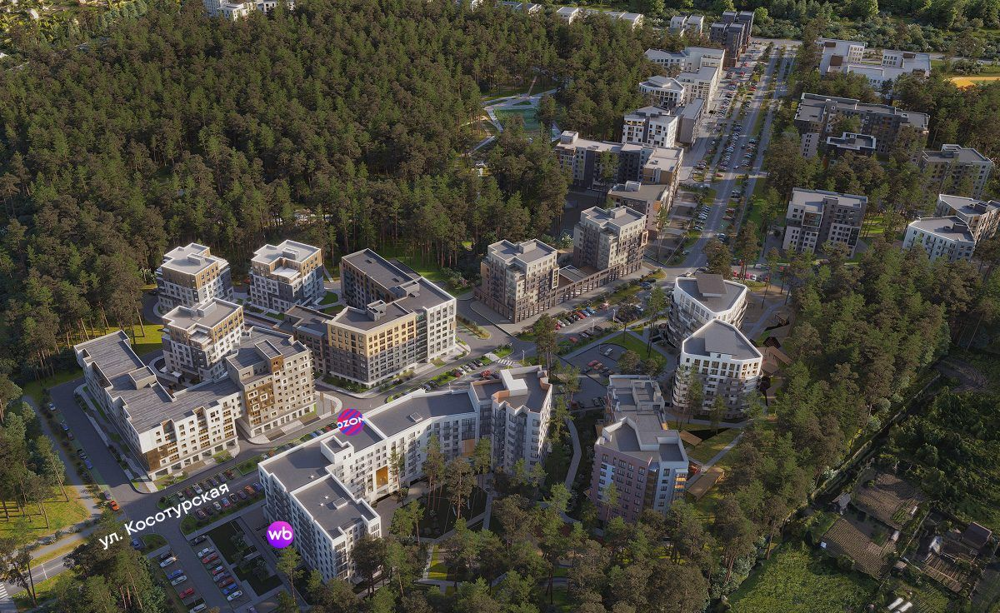

PR, вирусные и партизанские ходы
Кризис, превращённый в историю
инфоповоды, интрига, посевы в городских пабликах и Telegram-каналах, события

Билборд ЛЕС — ответ в «войне Дим»
реализованоиюнь 2024
«Катя, я купил нам квартиру в ЛЕСу»Летом 2024 года Екатеринбург спорил с билбордами: «Дима, какой отпуск, лучше купи ей квартиру…», «Дима, не мелочись…». Мы ответили от лица Димы: Катя, я купил нам квартиру в ЛЕСу. Билборд разлетелся по городским пабликам как финал сериала.
Ситуативный ответ в общегородском тренде: бренд — в одном ряду с федеральными игроками

Исходный баннер, с которого начался тренд в Екатеринбурге
реализованоиюнь 2024
Тренд, в который мы вошлиСериал начался с фасадного баннера «Дима, какой отпуск…» в центре города, его подхватили девелоперы и паблики. Мы не повторяли — мы закончили историю, причём на языке бренда: «в ЛЕСу».
Охват без медиабюджета: репосты в городских пабликах и СМИ

Визуал акции с Яндекс Станцией
реализованофевраль — март 2024
«Алиса, пакуй чемоданы»Акция с Яндекс Станцией в подарок к квартире — и визуал, где покупатель разговаривает с Алисой: «Пакуй чемоданы, мы переезжаем в живые кварталы ЛЕС!». Умная квартира объяснена одной фразой.
Умный дом — через юмор, а не через спецификации

Снегоуборочная техника #ЖелезноВместе на Широкой Речке
реализованофевраль 2024
Трактор с хештегами #ЖелезноВместеЖители Широкой Речки месяцами жаловались в СМИ и Telegram-каналы на снег и колею у школы. Застройщик по своей инициативе вывел технику с наклейкой #ЖелезноВместе — и фото трактора разошлись по районным чатам.
Пост — 1,07 тыс. просмотров, один из лучших в канале

Концепция парка, которую показали жителям Широкой Речки
реализованомарт 2023
Выйти к жителям раньше протестаДо начала работ — открытая встреча с жителями Широкой Речки: не «вырубка», а «частичное прореживание», парк для района и сроки.
Застройщик говорит со страхом, а не прячется от него

Проект общественного парка с лесничеством, май 2023
реализованомай 2023
«6 деревьев за каждое» и парк с лесничествомПубличное обязательство и закладка общественного парка: 3,6 тыс. деревьев в первый сезон вместе с Екатеринбургским лесничеством, площадки для воркаута, собак, кино.
Мэрия: «застройщик берёт на себя повышенные обязательства»

реализованоноябрь 2023
Скидка на языке брендаОффер назвали «зелёные дни»: даже скидка говорит голосом леса.
26,8 тыс. просмотров — рекорд канала, в 10 раз выше обычного

Иллюстрация: кварталы среди сохранённых сосен
предложениеследующий шаг
Открытая карта сохранённых сосенОнлайн-карта с каждой сохранённой сосной, её возрастом и «опекуном» из жителей. Ссылку сеют в районных пабликах и чатах Широкой Речки.
Спор о вырубке переходит в соучастие